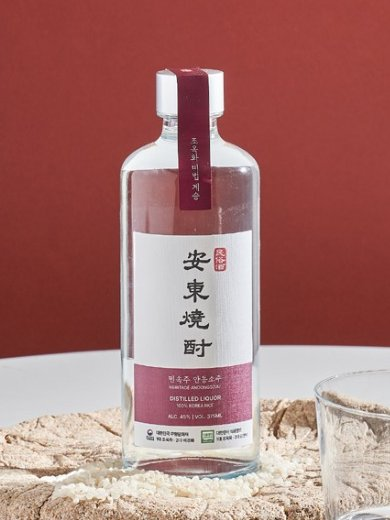

민속주 안동소주 45도
1988년 국가 8대 민속주 지정, 조옥화→김연박 명인 계승

- 분류
- 증류식
- 도수
- 45도
- 출시
- 1990
- 제조사
- 민속주안동소주
- 지역
- 경상도
이름 유래
안동소주는 특정 브랜드명이 아닌 안동 지역 증류식 소주 전체의 통칭(고려 말 원나라 군대 주둔 시 전해진 아라크 증류 기술이 안동 반가 문화에 정착). 그중 민속주 안동소주는 '민속주'(국가 지정 전통 민속주) 수식어로 전통 제조법 고수를 강조한 명칭.
상세 연혁
전통 밀누룩 사용, 가마솥 상압 단식증류로 곡물 풍미를 살린 전통 방식 고수. 고 조옥화 명인(식품명인 제20호, 2020년 작고) → 현재 아들 김연박 명인(식품명인 제20-가호)·며느리 배경화(무형문화재) 3대째 계승. 1987년 경북무형문화재 지정, 1988년 국가 8대 민속주 지정을 거쳐 1990년 대한민국 최초로 대중에게 출시.
지역별 소주 브랜드 전체 보기 →